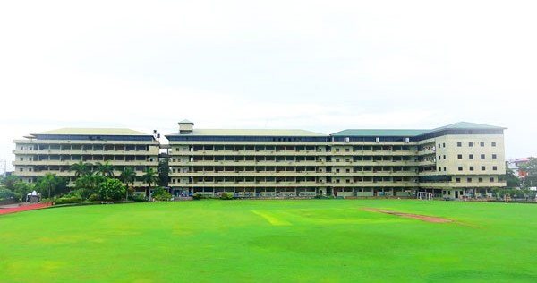

My Education
Lyceum International School Wattala
I completed my O Level examinations at Lyceum International School in Wattala. My time at Lyceum provided me with a strong academic foundation and numerous opportunities for personal development.
The school fosters an environment that encourages both academic excellence and participation in extracurricular activities, which helped shape my interests and skills.
Key Experiences
During my studies, I focused on Chemistry, Physics, and Computer Science. I especially enjoyed spending time with my friends and working hard to achieve the best grades possible at school.
- Completed O Levels in 2024.
- Developed skills in coding, as well as knowledge of chemical properties, physics concepts, and more.
- Actively participated in Karate, Cricket, Swimming, and High Jump throughout my school years.
Learn More
For more information about Lyceum International School Wattala, you can visit their official website: